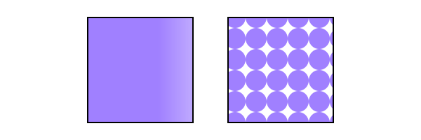
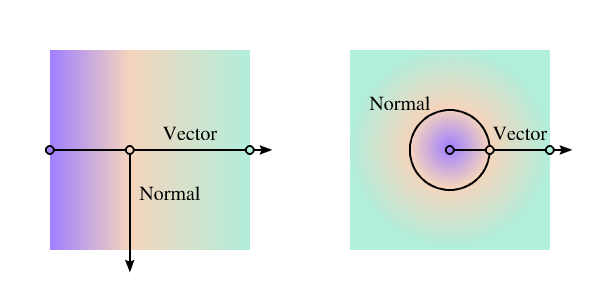
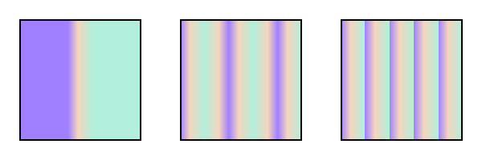
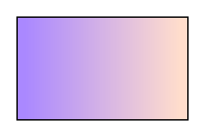
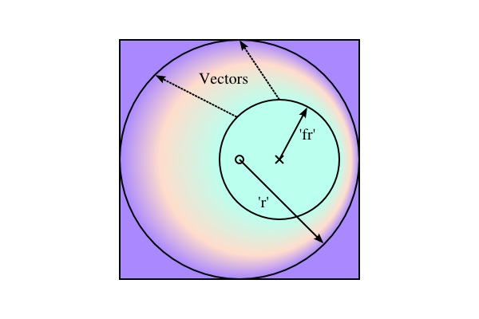
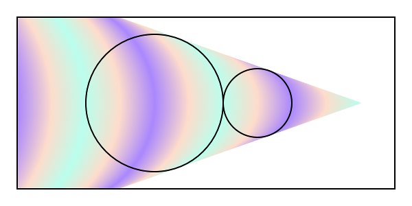
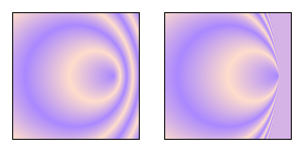
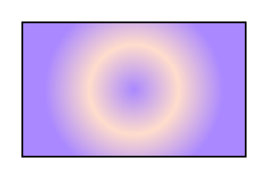
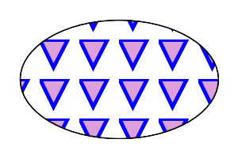

14.1. Introduction
This section covers Paint Servers, a method which allows the fill or stroke of an object to be defined by a resource found elsewhere. It allows resources to be reused throughout a document. See the section Painting: Filling and Stroking for a general discussion of filling and stroking objects.
SVG defines several types of paint servers:
| SVG 2 Requirement: | Arbitrary fills for shapes. |
|---|---|
| Resolution: | SVG 2 shall support filling and stroking from arbitrary elements. |
| Purpose: | To allow for example videos or images to be used as a fill source. |
| Owner: | Alex? (no action) |

Two types of paint servers. From left to right: A linear gradient. A pattern.
Paint servers are used by including a URL reference in a fill or stroke property (i.e. fill="url(#MyLightPurple)").
properties inherit into a paint-server element from its ancestors; properties do not inherit from the element referencing the paint server element.
Paint-server elements are never rendered directly; their only usage is as something that can be referenced using the fill and stroke properties. The display value for these elements must always be set to none by the user agent style sheet, and this declaration must have importance over any other CSS rule or presentation attribute. Paint-server elements are available for referencing even when the display property on the paint-server element or any of its ancestors is set to none.
14.1.1. Using paint servers as templates
Most paint server elements accept an ‘href’ attribute, which can be used to define a compatible paint server element as a template. Attributes defined for the template element are used instead of the initial value if corresponding attributes are not specified on the current element. Furthermore, if the current element does not have any child content other than descriptive elements, than the child content of the template element is cloned to replace it.
The exclusion of descriptive content is new in SVG 2 for ‘pattern’,
consistent with the behavior of gradients,
and with changes to make descriptive content valid for any SVG element.
Also new: template cross-references may be to external file resources (different chapters in SVG 1.1 had inconsistent guidance on this point), and the "inheritance" of child elements is represented through a shadow tree.
Templating can be indirect to an arbitrary level (subject to security limits on external file resources, which can make a reference invalid). Thus, if the referenced template element does not have relevant child content or does not define the specified attribute, then the attribute value or cloned content is derived from another element referenced by the template’s own ‘href’ attribute.
The description of each ‘href’ attribute in this chapter defines the limits of the templating process, as follows:
- What type of element is a valid target for the reference
- Which attributes are duplicated from the template
If any of the specified attributes are not defined on the current element, or if the current element has no child elements other than descriptive elements, the user agent must process the URL to identify the referenced resource. If the URL reference is not invalid, then the URL’s target element is used as the template element, as follows:
-
For any of the specified attributes not defined on the current element, the user agent must determine the value of the attribute for the template element and use it as the value for the current element. The template value is derived from recursive cross-references if required. The initial value for the attribute is only substituted after all valid URL references are exhausted.
-
If the current element has no child elements other than descriptive elements, the user agent must generate a shadow tree for this element, which must behave equivalently to a use-element shadow tree, except that the host is the current paint server element. The source elements in the referenced document subtree for the element instances cloned into the shadow tree are:
- the child content of the template element, if it has child elements other than descriptive elements,
- the source elements that are used, or would be used, to generate the template element’s own shadow tree, otherwise.
When a paint-server element has a shadow tree, the element instances in that tree must be used in rendering the paint server effect, as if they were the paint server element’s own children.
The use-element shadow tree model for templating allows cloned content to inherit different styles than the original. This behavior is newly defined in SVG 2; SVG 1.1 did not define how styles applied to inherited paint server content.
14.2. Gradients
Gradients consist of smooth color transitions between points on a drawing surface. SVG provides for two types of gradients:
Once a gradient is defined, a graphics element can be filled or stroked with the gradient by setting the fill or stroke properties to reference the gradient.
Color transitions for linear and radial gradients are defined by a series of color stops along a gradient vector. A gradient normal defines how the colors in a vector are painted to the surface. For a linear gradient, a normal is a line perpendicular to the vector. For a radial gradient, a normal is a circle intersecting the vector at a right angle. Each gradient normal is painted with one color determined by the vector.

Linear and radial gradients with the gradient vector indicated. The vector consists of three stops shown by small circles. One gradient normal is shown for each gradient.
For linear and radial gradients, the color value between two stops along the gradient vector is the linear interpolation, per channel, of the color for each stop, weighted by the distance from each stop.
$V = C0.rgba + (C1.rgba - C0.rgba) * ((D - C0.offset) / (C1.offset - C0.offset));
Where, for each channel:
- V is the interpolated result for that channel
- C0 is the stop color for the stop with the lowest offset
- O0 is the offset of C0
- C1 is the other stop color
- O1 is the offset of C1
- D is the distance along the gradient vector
When a graphics element references a gradient, conceptually the graphics element should take a copy of the gradient vector with gradient normals and treat it as part of its own geometry. Any transformations applied to the graphics element geometry also apply to the copied gradient vector and gradient normals. Any gradient transforms that are specified on the reference gradient are applied before any graphics element transformations are applied to the gradient.
14.2.1. Definitions
- gradient element
- A gradient element is one that defines a gradient paint server.
This specification defines the following gradient elements:
‘
linearGradient’ and ‘radialGradient’.
14.2.2. Linear gradients
Linear gradients are defined by a
‘linearGradient’ element.
linearGradient’- Categories:
- Gradient element, never-rendered element, paint server element
- Content model:
-
Any number of the following elements, in any order:
animate, animateTransform,
script, set,stop,style - Attributes:
- DOM Interfaces:
14.2.2.1. Attributes
Note that the ‘x1’,‘y1’, ‘x2’ and ‘y2’ attributes
on a ‘linearGradient’ are not presentation attributes;
the used value is not affected by CSS styles.
The ‘gradientTransform’ attribute is a presentation attribute
for the transform property.
- gradientUnits
-
Defines the coordinate system for attributes ‘x1’, ‘y1’, ‘x2’ and ‘y2’.
- Value
- userSpaceOnUse | objectBoundingBox
- initial value
- objectBoundingBox
- Animatable
- yes
- userSpaceOnUse
-
If gradientUnits="userSpaceOnUse", ‘x1’, ‘y1’, ‘x2’, and ‘y2’ represent values in the coordinate system that results from taking the current user coordinate system in place at the time when the gradient element is referenced (i.e., the user coordinate system for the element referencing the gradient element via a fill or stroke property) and then applying the transform specified by attribute ‘gradientTransform’. Percentages represent values relative to the current SVG viewport.
- objectBoundingBox
-
If gradientUnits="objectBoundingBox", the user coordinate system for attributes ‘x1’, ‘y1’, ‘x2’ and ‘y2’ is established using the bounding box of the element to which the gradient is applied (see Object bounding box units) and then applying the transform specified by attribute ‘gradientTransform’. Percentages represent values relative to the bounding box for the object.
When gradientUnits="objectBoundingBox" and ‘gradientTransform’ is the identity matrix, the normal of the linear gradient is perpendicular to the gradient vector in object bounding box space (i.e., the abstract coordinate system where (0,0) is at the top/left of the object bounding box and (1,1) is at the bottom/right of the object bounding box). When the object’s bounding box is not square, the gradient normal which is initially perpendicular to the gradient vector within object bounding box space may render non-perpendicular relative to the gradient vector in user space. If the gradient vector is parallel to one of the axes of the bounding box, the gradient normal will remain perpendicular. This transformation is due to application of the non-uniform scaling transformation from bounding box space to user coordinate system.
- gradientTransform
-
Contains the definition of an optional additional transformation from the gradient coordinate system onto the target coordinate system (i.e., 'userSpaceOnUse' or 'objectBoundingBox'). This allows for things such as skewing the gradient. This additional transformation matrix is post-multiplied to (i.e., inserted to the right of) any previously defined transformations, including the implicit transformation necessary to convert from object bounding box units to user coordinate system.
- Value
- <transform-list>
- initial value
- identity transform
- Animatable
- yes
- x1
-
‘x1’, ‘y1’, ‘x2’ and ‘y2’ define a gradient vector for the linear gradient. This gradient vector provides starting and ending points onto which the gradient stops are mapped. The values of ‘x1’, ‘y1’, ‘x2’ and ‘y2’ can be either numbers or percentages.
- Value
- <length>
- initial value
- 0%
- Animatable
- yes
- y1
-
See ‘x1’.
- Value
- <length>
- initial value
- 0%
- Animatable
- yes
- x2
-
See ‘x1’.
- Value
- <length>
- initial value
- 100%
- Animatable
- yes
- y2
-
See ‘x1’.
- Value
- <length>
- initial value
- 0%
- Animatable
- yes
- spreadMethod
-
Indicates what happens if the gradient starts or ends inside the bounds of the target rectangle.
- Value
- pad | reflect | repeat
- initial value
- pad
- Animatable
- yes
- pad
- Use the terminal colors of the gradient to fill the remainder of the target region.
- reflect
- Reflect the gradient pattern start-to-end, end-to-start, start-to-end, etc. continuously until the target rectangle is filled.
- repeat
- Repeat the gradient pattern start-to-end, start-to-end, start-to-end, etc. continuously until the target region is filled.

Illustration of the three possible values for spreadMethod, from left to right: pad, reflect, repeat. The gradient vector spans from 40% to 60% of the bounding box width.
- href
-
A URL reference to a template gradient element; to be valid, the reference must be to a different ‘
linearGradient’ or a ‘radialGradient’ element.Refer to the process for using paint servers as templates, and to the common handling defined for URL reference attributes and deprecated XLink attributes.
The specified attributes that will be copied from the template are:
- ‘x1’
- ‘y1’
- ‘x2’
- ‘y2’
- ‘gradientTransform’
- ‘gradientUnits’
- ‘spreadMethod’
- Value
- URL [URL]
- initial value
- empty
- Animatable
- yes
14.2.2.2. Notes on linear gradients
If ‘x1’ = ‘x2’ and ‘y1’ = ‘y2’, then the area to be painted will be painted as a single color using the color and opacity of the last gradient stop.
Example lingrad01 shows how to fill a rectangle by referencing a linear gradient paint server.
<?xml version="1.0" standalone="no"?>
<svg xmlns="http://www.w3.org/2000/svg"
version="1.1"
viewBox="0 0 300 200" >
<title>Example lingrag01</title>
<desc>Fill a rectangle using a linear-gradient paint server.</desc>
<defs>
<linearGradient id="MyGradient">
<stop offset="5%" stop-color="#A8F" />
<stop offset="95%" stop-color="#FDC" />
</linearGradient>
</defs>
<!-- The rectangle is filled using a linear-gradient paint server -->
<rect fill="url(#MyGradient)"
stroke="black"
stroke-width="2"
x="25" y="25" width="250" height="150"/>
</svg>

Example lingrad01

14.2.3. Radial gradients
Radial gradients are defined by a
‘radialGradient’ element.
radialGradient’- Categories:
- Gradient element, never-rendered element, paint server element
- Content model:
-
Any number of the following elements, in any order:
animate, animateTransform,
script, set,stop,style - Attributes:
- DOM Interfaces:
14.2.3.1. Attributes
Note that the ‘cx’,‘cy’, and ‘r’ attributes
on a ‘radialGradient’ are not presentation attributes;
the used value is not affected by CSS styles.
The ‘gradientTransform’ attribute is a presentation attribute
for the transform property.
- gradientUnits = "userSpaceOnUse | objectBoundingBox"
-
Defines the coordinate system for attributes ‘cx’, ‘cy’, ‘r’, ‘fx’, ‘fy’, and ‘fr’.
- initial value
- objectBoundingBox
- Animatable
- yes
- userSpaceOnUse
-
If gradientUnits="userSpaceOnUse", ‘cx’, ‘cy’, ‘r’, ‘fx’, ‘fy’, and ‘fr’ represent values in the coordinate system that results from taking the current user coordinate system in place at the time when the gradient element is referenced (i.e., the user coordinate system for the element referencing the gradient element via a fill or stroke property) and then applying the transform specified by attribute ‘gradientTransform’. Percentages represent values relative to the current SVG viewport.
- objectBoundingBox
-
If gradientUnits="objectBoundingBox", the user coordinate system for attributes ‘cx’, ‘cy’, ‘r’, ‘fx’, ‘fy’, and ‘fr’ is established using the bounding box of the element to which the gradient is applied (see Object bounding box units) and then applying the transform specified by attribute ‘gradientTransform’. Percentages represent values relative to the bounding box for the object.
When gradientUnits="objectBoundingBox" and ‘gradientTransform’ is the identity matrix, then the rings of the radial gradient are circular with respect to the object bounding box space (i.e., the abstract coordinate system where (0,0) is at the top/left of the object bounding box and (1,1) is at the bottom/right of the object bounding box). When the object’s bounding box is not square, the rings that are conceptually circular within object bounding box space will render as elliptical due to application of the non-uniform scaling transformation from bounding box space to user coordinate system.
- gradientTransform = "<transform-list>"
-
Contains the definition of an optional additional transformation from the gradient coordinate system onto the target coordinate system (i.e., 'userSpaceOnUse' or 'objectBoundingBox'). This allows for things such as skewing the gradient. This additional transformation matrix is post-multiplied to (i.e., inserted to the right of) any previously defined transformations, including the implicit transformation necessary to convert from object bounding box units to user coordinate system.
- initial value
- identity transform
- Animatable
- yes
- cx = "<length>"
-
‘cx’, ‘cy’ and ‘r’ define the end circle for the radial gradient. The gradient will be drawn such that the 100% gradient stop is mapped to the perimeter of this end circle.
- initial value
- 50%
- Animatable
- yes
- cy = "<length>"
-
See ‘cx’.
- initial value
- 50%
- Animatable
- yes
- r = "<length>"
-
See ‘cx’.
A negative value is an error (see Error processing).
- initial value
- 50%
- Animatable
- yes
- fx = "<length>"
-
‘fx’, ‘fy’, and ‘fr’ define the start circle for the radial gradient. The gradient will be drawn such that the 0% gradient stop is mapped to the perimeter of this start circle.
- initial value
- 50%
- Animatable
- yes
If the element references an element that specifies a value for 'fx', then the value of 'fx' is inherited from the referenced element.

This diagram shows how the geometric attributes are defined for the case where ‘fr’ is 50% of ‘r’. The small circle marks the center of the outermost circle (‘cx’,‘cy’), while the cross marks the center of the innermost circle (‘fx’,‘fy’). The dashed lines show two gradient vectors. Vectors connect corresponding points on the inner and outer most circles. The region outside the outer circle is painted with the last stop-color while the region inside the inner circle is painted with the first stop-color.
- fy = "<length>"
-
See ‘fx’.
- initial value
- 50%
- Animatable
- yes
If the element references an element that specifies a value for 'fy', then the value of 'fy' is inherited from the referenced element.
- fr = "<length>"
-
New in SVG 2. Added to align with Canvas.
‘fr’ is the radius of the focal circle. See ‘fx’.
A negative value is an error (see Error processing).
- initial value
- 0%, see below
- Animatable
- yes
If the attribute is not specified, the effect is as if a value of '0%' were specified. If the element references an element that specifies a value for 'fr', then the value of 'fr' is inherited from the referenced element.
SVG 2 Requirement: Allow specifying focal circle radius in radial gradients. Resolution: Add an ‘fr’ attribute to ‘radialGradient’> for SVG 2. Purpose: To align with Canvas. The zero-offset stop would be along the circle defined by the ‘fx’, ‘fy’ and ‘fr’ attributes. Owner: Erik (ACTION-3098) - spreadMethod = "pad | reflect | repeat"
-
Indicates what happens if the gradient starts or ends inside the bounds of the object(s) being painted by the gradient. Has the same values and meanings as the ‘spreadMethod’ attribute on ‘
linearGradient’ element.- initial value
- pad
- Animatable
- yes
- href = [URL]
-
A URL reference to a template gradient element; to be valid, the reference must be to a ‘
linearGradient’ element or a different ‘radialGradient’ element.Refer to the process for using paint servers as templates, and to the common handling defined for URL reference attributes and deprecated XLink attributes.
The specified attributes that will be copied from the template are:
- ‘cx’
- ‘cy’
- ‘r’
- ‘fx’
- ‘fy’
- ‘fr’
- ‘gradientTransform’
- ‘gradientUnits’
- ‘spreadMethod’
Refer to the common handling defined for URL reference attributes and deprecated XLink attributes.
- initial value
- empty
- Animatable
- yes
| SVG 2 Requirement: | Clarify radial gradients with focal point on the circle. |
|---|---|
| Resolution: | When the focal point is on the circle edge, with repeat, then the distance between the first and last stop for the repeating colors is 0 and the paint should generate a color that is the average of all the gradient stops. |
| Purpose: | To improve interoperability of radial gradients. |
| Owner: | Erik (ACTION-3097) |
| Note: | SVG 1.1 does not define what to do when the focal point is on the circle edge, with 'repeat'. The distance between the first and last stop for the repeating colors is 0. It was resolved that the paint should generate a color that is the weighted average (by offset) of all the gradient stops. |
14.2.3.2. Notes on radial gradients
Changed in SVG 2. SVG 1.1 required that the focal point, if outside the end circle, be moved to be on the end circle. The change was made to align with Canvas.
Allowing the focal point to lie outside the end circle was resolved at the Rigi Kaltbad working group meeting.
If the start circle defined by ‘fx’, ‘fy’ and ‘fr’ lies outside the end circle defined by ‘cx’, ‘cy’, and ‘r’, effectively a cone is created, touched by the two circles. Areas outside the cone stay untouched by the gradient (transparent black).
If the start circle fully overlaps with the end circle, no gradient is drawn. The area stays untouched (transparent black).

A radial gradient with the focal (start) circle outside the end circle. The focal circle is the smaller circle on the right. The gradient has spreadMethod="reflect".

Two radial gradients with spreadMethod="repeat". On the left, the focal point is just inside the right side of the circle defined by ‘cx’, ‘cy’, and ‘r’. On the right, the focal point is on the circle. In this case, the area painted to the right of the circumference has a fill equal to the weighted average of the colors in the gradient vector.
The treatment of the area to the right of the gradient in the right-hand side of the above figure is different from that of Canvas where the area would be transparent black. The difference is to maintain compatibility with SVG 1.1.
The color space for the weighted average is the same as in which the gradient is interpolated. See Rigi Kaltbad working group meeting.
Example radgrad01 shows how to fill a rectangle by referencing a radial gradient paint server.
<?xml version="1.0" standalone="no"?>
<svg xmlns="http://www.w3.org/2000/svg"
viewBox="0 0 300 200" >
<title>Example radgrad01</title>
<desc>Fill a rectangle by referencing a radial gradient paint server.</desc>
<defs>
<radialGradient id="MyGradient"
gradientUnits="userSpaceOnUse"
cx="150" cy="100"
r="100">
<stop offset="0%" stop-color="#A8F" />
<stop offset="50%" stop-color="#FDC" />
<stop offset="100%" stop-color="#A8F" />
</radialGradient>
</defs>
<!-- The rectangle is filled using a radial gradient paint server -->
<rect fill="url(#MyGradient)"
stroke="black"
stroke-width="2"
x="25" y="25" width="250" height="150"/>
</svg>

Example radgrad01

14.2.4. Gradient stops
The vector of colors to use in a gradient is
defined by the ‘stop’ elements that are child elements to a
‘linearGradient’, or ‘radialGradient’
element.
In SVG 1.1, the above read: "The ramp of colors..." but "ramp" is used nowhere else in this section.
stop’14.2.4.1. Attributes
- offset
-
Indicates were the gradient stop is placed. For linear gradients, the ‘offset’ attribute represents a location along the gradient vector. For radial gradients, it represents a fractional distance from the edge of the innermost/smallest circle to the edge of the outermost/largest circle.
- Value
- <number> | <percentage>
- initial value
- 0
- Animatable
- yes
- <number>
- A number usually ranging from 0 to 1.
- <percentage>
- A percentage usually ranging from 0% to 100%.
14.2.4.2. Properties
- ‘stop-color’
-
The stop-color property indicates what color to use at that gradient stop. The keyword currentColor and other color syntaxes can be specified in the same manner as within a <paint> specification for the fill and stroke properties.
With respect to gradients, SVG treats the 'transparent' keyword differently than CSS. SVG does not calculate gradients in pre-multiplied space, so 'transparent' really means transparent black. Specifying a stop-color with the value 'transparent' is equivalent to specifying a stop-color with the value 'black' and a stop-opacity with the value '0'.
- Value
- <‘color’>
- Initial
- black
- Applies to
- ‘
stop’ elements - Inherited
- no
- Percentages
- N/A
- Media
- visual
- Animatable
- yes
- ‘stop-opacity’
-
The stop-opacity property defines the opacity of a given gradient stop. The opacity value used for the gradient calculation is the product of the value of stop-opacity and the opacity of the value of stop-color. For stop-color value types of that don’t include explicit opacity information, the opacity of that component must be treated as 1.
- Value
- <‘opacity’>
- Initial
- 1
- Applies to
- ‘
stop’ elements - Inherited
- no
- Percentages
- N/A
- Media
- visual
- Computed value
- the specified value converted to a number, clamped to the range [0,1]
- Animatable
- yes
- <number>
- The opacity of the stop-color. Any values outside the range 0.0 (fully transparent) to 1.0 (fully opaque) must be clamped to this range.
- <percentage>
- The opacity of the stop-color expressed as a percentage of the range 0 to 1.
14.2.4.3. Notes on gradient stops
- Gradient offset values less than 0 (or less than 0%) are rounded up to 0%. Gradient offset values greater than 1 (or greater than 100%) are rounded down to 100%.
- It is necessary that at least two stops defined to have a gradient effect. If no stops are defined, then painting shall occur as if 'none' were specified as the paint style. If one stop is defined, then paint with the solid color fill using the color defined for that gradient stop.
- Each gradient offset value is required to be equal to or greater than the previous gradient stop’s offset value. If a given gradient stop’s offset value is not equal to or greater than all previous offset values, then the offset value is adjusted to be equal to the largest of all previous offset values.
-
If two gradient stops have the same offset value, then the latter gradient stop controls the color value at the overlap point. In particular:
<stop offset="0" stop-color="white"/> <stop offset=".2" stop-color="red"/> <stop offset=".2" stop-color="blue"/> <stop offset="1" stop-color="black"/>
will have approximately the same effect as:
<stop offset="0" stop-color="white"/> <stop offset=".1999999999" stop-color="red"/> <stop offset=".2" stop-color="blue"/> <stop offset="1" stop-color="black"/>
which is a gradient that goes smoothly from white to red, then abruptly shifts from red to blue, and then goes smoothly from blue to black.
14.3. Patterns
A pattern is used to fill or stroke
an object using a pre-defined graphic object which can be replicated
("tiled") at fixed intervals in x and y to cover the
areas to be painted. Patterns are defined using a ‘pattern’
element and then referenced by properties fill and
stroke on a given graphics element to indicate that the
given element shall be filled or stroked with the pattern.
Attributes ‘x’, ‘y’, ‘width’, ‘height’ and ‘patternUnits’ define a reference rectangle somewhere on the infinite canvas. The reference rectangle has its top/left at (x, y) and its bottom/right at (x + width, y + height). The tiling theoretically extends a series of such rectangles to infinity in X and Y (positive and negative), with rectangles starting at (x + m*width, y + n* height) for each possible integer value for m and n.
pattern’- Categories:
- Container element, never-rendered element, paint server element
- Content model:
-
Any number of the following elements, in any order:
a, clipPath, filter,foreignObject,image,marker, mask,script,style,switch,text,view - Attributes:
- DOM Interfaces:
14.3.1. Attributes
Note that the ‘x’,‘y’, ‘width’ and ‘height’ attributes
on a ‘pattern’ are not presentation attributes;
the used value is not affected by CSS styles.
The ‘patternTransform’ attribute is a presentation attribute for the transform property.
- patternUnits
-
Defines the coordinate system for attributes ‘x’, ‘y’, ‘width’ and ‘height’.
- Value
- userSpaceOnUse | objectBoundingBox
- initial value
- objectBoundingBox
- Animatable
- yes
- userSpaceOnUse
-
If patternUnits="userSpaceOnUse", ‘x’, ‘y’, ‘width’ and ‘height’ represent values in the coordinate system that results from taking the current user coordinate system in place at the time when the ‘
pattern’ element is referenced (i.e., the user coordinate system for the element referencing the ‘pattern’ element via a fill or stroke property) and then applying the transform specified by attribute ‘patternTransform’. Percentages represent values relative to the current SVG viewport. - objectBoundingBox
-
If patternUnits="objectBoundingBox", the user coordinate system for attributes ‘x’, ‘y’, ‘width’ and ‘height’ is established using the bounding box of the element to which the pattern is applied (see Object bounding box units) and then applying the transform specified by attribute ‘patternTransform’. Percentages represent values relative to the bounding box for the object.
- patternContentUnits
-
Defines the coordinate system for the contents of the ‘
pattern’. Note that this attribute has no effect if attribute ‘viewBox’ is specified.- Value
- userSpaceOnUse | objectBoundingBox
- initial value
- userSpaceOnUse
- Animatable
- yes
- userSpaceOnUse
-
If patternContentUnits="userSpaceOnUse", the user coordinate system for the contents of the ‘
pattern’ element is the coordinate system that results from taking the current user coordinate system in place at the time when the ‘pattern’ element is referenced (i.e., the user coordinate system for the element referencing the ‘pattern’ element via a fill or stroke property) and then applying the transform specified by attribute ‘patternTransform’. - objectBoundingBox
-
If patternContentUnits="objectBoundingBox", the user coordinate system for the contents of the ‘
pattern’ element is established using the bounding box of the element to which the pattern is applied (see Object bounding box units) and then applying the transform specified by attribute ‘patternTransform’.
- patternTransform
-
Contains the definition of an optional additional transformation from the pattern coordinate system onto the target coordinate system (i.e., 'userSpaceOnUse' or 'objectBoundingBox'). This allows for things such as skewing the pattern tiles. This additional transformation matrix is post-multiplied to (i.e., inserted to the right of) any previously defined transformations, including the implicit transformation necessary to convert from object bounding box units to user coordinate system.
- Value
- <transform-list>
- initial value
- identity transform
- Animatable
- yes
- x
-
‘x’, ‘y’, ‘width’ and ‘height’ indicate how the pattern tiles are placed and spaced. These attributes represent coordinates and values in the coordinate space specified by the combination of attributes ‘patternUnits’ and ‘patternTransform’.
- Value
- <length>
- initial value
- 0
- Animatable
- yes
- y
-
See ‘x’.
- Value
- <length>
- initial value
- 0
- Animatable
- yes
- width
-
See ‘x’.
- Value
- <length>
- initial value
- 0
- Animatable
- yes
A negative value is an error (see Error processing). A value of zero disables rendering of the element (i.e., no paint is applied).
- height
-
See ‘x’.
- Value
- <length>
- initial value
- 0
- Animatable
- yes
A negative value is an error (see Error processing). A value of zero disables rendering of the element (i.e., no paint is applied).
- href
-
A URL reference to a template element, which must be a different ‘
pattern’ element to be valid.Refer to the process for using paint servers as templates, and to the common handling defined for URL reference attributes and deprecated XLink attributes.
The specified attributes that will be copied from the template are:
- ‘x’
- ‘y’
- ‘width’
- ‘height’
- ‘viewBox’
- ‘preserveAspectRatio’
- ‘patternTransform’
- ‘patternUnits’
- ‘patternContentUnits’
- Value
- URL [URL]
- initial value
- empty
- Animatable
- yes
14.3.2. Notes on patterns
SVG’s user agent style sheet sets
the overflow property for ‘pattern’ elements to
hidden, which causes a rectangular clipping
path to be created at the bounds of the pattern tile. Unless the
overflow property is overridden, any graphics within the pattern
which goes outside of the pattern rectangle will be clipped.
Example pattern01 below shows the
effect of clipping to the pattern tile.
Note that if the overflow property is set to visible the rendering behavior for the pattern outside the bounds of the pattern is currently undefined. A future version of SVG may require the overflow to be shown. SVG implementers are encouraged to render the overflow as this is the behavior expected by authors. If overflow is rendered, the pattern tiles should be rendered left to right in rows and the rows from top to bottom.
See GitHub Issue 129
The contents of the ‘pattern’ are relative to a new coordinate
system. If there is a ‘viewBox’ attribute, then the new coordinate
system is fitted into the region defined by the ‘x’, ‘y’,
‘width’, ‘height’ and ‘patternUnits’ attributes on the
‘pattern’ element using the standard rules for ‘viewBox’ and
‘preserveAspectRatio’. If there is no ‘viewBox’ attribute, then
the new coordinate system has its origin at (x, y),
where x is established by the ‘x’ attribute on the
‘pattern’ element, and y is established by the ‘y’
attribute on the ‘pattern’ element. Thus, in the following example:
<pattern x="10" y="10" width="20" height="20"> <rect x="5" y="5" width="10" height="10"/> </pattern>
the rectangle has its top/left located 5 units to the right and 5 units down from the origin of the pattern tile.
The ‘viewBox’ attribute introduces a supplemental transformation which is applied on top of any transformations necessary to create a new pattern coordinate system due to attributes ‘x’, ‘y’, ‘width’, ‘height’ and ‘patternUnits’.
Event attributes and event listeners attached
to the contents of a ‘pattern’ element are not processed;
only the rendering aspects of ‘pattern’ elements are
processed.
Example pattern01
shows how to fill a rectangle by referencing a pattern paint
server. Note how the blue stroke of each triangle has been
slightly clipped at the top and the left. This is due to SVG’s
user agent style sheet setting
the overflow property for ‘pattern’ elements to
hidden, which causes the pattern to be clipped
to the bounds of the pattern tile.
<?xml version="1.0" standalone="no"?>
<svg xmlns="http://www.w3.org/2000/svg"
version="1.1"
viewBox="0 0 300 200" >
<title>Example pattern01</title>
<desc>Fill an ellipse using a pattern paint server.</desc>
<defs>
<pattern id="TrianglePattern"
patternUnits="userSpaceOnUse"
x="0" y="0" width="50" height="50"
viewBox="0 0 10 10" >
<path d="M 0 0 L 7 0 L 3.5 7 z"
fill="plum"
stroke="blue" />
</pattern>
</defs>
<!-- The ellipse is filled using a triangle pattern paint server -->
<ellipse fill="url(#TrianglePattern)"
stroke="black"
stroke-width="2"
cx="150" cy="100" rx="125" ry="75" />
</svg>

Example pattern01

14.4. DOM interfaces
14.4.1. Interface SVGGradientElement
The SVGGradientElement interface is used as a base interface
for gradient paint server element interfaces.
[Exposed =Window ]interface :SVGGradientElement SVGElement { // Spread Method Typesconst unsigned short SVG_SPREADMETHOD_UNKNOWN = 0;const unsigned short SVG_SPREADMETHOD_PAD = 1;const unsigned short SVG_SPREADMETHOD_REFLECT = 2;const unsigned short SVG_SPREADMETHOD_REPEAT = 3; [SameObject ]readonly attribute SVGAnimatedEnumeration gradientUnits ; [SameObject ]readonly attribute SVGAnimatedTransformList gradientTransform ; [SameObject ]readonly attribute SVGAnimatedEnumeration spreadMethod ; };SVGGradientElement includes SVGURIReference ;
The numeric spread method type constants defined on SVGGradientElement
are used to represent the keyword values that the ‘spreadMethod’
attribute can take. Their meanings are as follows:
| Constant | Meaning |
|---|---|
| The pad keyword. |
| The reflect keyword. |
| The repeat keyword. |
| Some other value. |
The gradientUnits
| Value | Numeric type value |
|---|---|
| userSpaceOnUse | SVG_UNIT_TYPE_USERSPACEONUSE
|
| objectBoundingBox | SVG_UNIT_TYPE_OBJECTBOUNDINGBOX
|
The gradientTransformlinearGradient’ and ‘radialGradient’ elements.
The spreadMethod
14.4.2. Interface SVGLinearGradientElement
An SVGLinearGradientElement object represents an ‘linearGradient’
in the DOM.
[Exposed =Window ]interface :SVGLinearGradientElement SVGGradientElement { [SameObject ]readonly attribute SVGAnimatedLength x1 ; [SameObject ]readonly attribute SVGAnimatedLength y1 ; [SameObject ]readonly attribute SVGAnimatedLength x2 ; [SameObject ]readonly attribute SVGAnimatedLength y2 ; };
The
x1y1x2y2
14.4.3. Interface SVGRadialGradientElement
An SVGRadialGradientElement object represents an ‘radialGradient’
in the DOM.
[Exposed =Window ]interface :SVGRadialGradientElement SVGGradientElement { [SameObject ]readonly attribute SVGAnimatedLength cx ; [SameObject ]readonly attribute SVGAnimatedLength cy ; [SameObject ]readonly attribute SVGAnimatedLength r ; [SameObject ]readonly attribute SVGAnimatedLength fx ; [SameObject ]readonly attribute SVGAnimatedLength fy ; [SameObject ]readonly attribute SVGAnimatedLength fr ; };
The
cxcyrfxfyfr
14.4.4. Interface SVGStopElement
An SVGStopElement object represents a ‘stop’ element
in the DOM.
[Exposed =Window ]interface :SVGStopElement SVGElement { [SameObject ]readonly attribute SVGAnimatedNumber offset ; };
The offset
Note that SVGStopElement does not have a
reflecting IDL attribute for its ‘path’ attribute.
14.4.5. Interface SVGPatternElement
An SVGPatternElement object represents a ‘pattern’ element
in the DOM.
[Exposed =Window ]interface :SVGPatternElement SVGElement { [SameObject ]readonly attribute SVGAnimatedEnumeration patternUnits ; [SameObject ]readonly attribute SVGAnimatedEnumeration patternContentUnits ; [SameObject ]readonly attribute SVGAnimatedTransformList patternTransform ; [SameObject ]readonly attribute SVGAnimatedLength x ; [SameObject ]readonly attribute SVGAnimatedLength y ; [SameObject ]readonly attribute SVGAnimatedLength width ; [SameObject ]readonly attribute SVGAnimatedLength height ; };SVGPatternElement includes SVGFitToViewBox ;SVGPatternElement includes SVGURIReference ;
The patternUnitspatternContentUnits
| Value | Numeric type value |
|---|---|
| userSpaceOnUse | SVG_UNIT_TYPE_USERSPACEONUSE
|
| objectBoundingBox | SVG_UNIT_TYPE_OBJECTBOUNDINGBOX
|
The patternTransform
The
xywidthheight